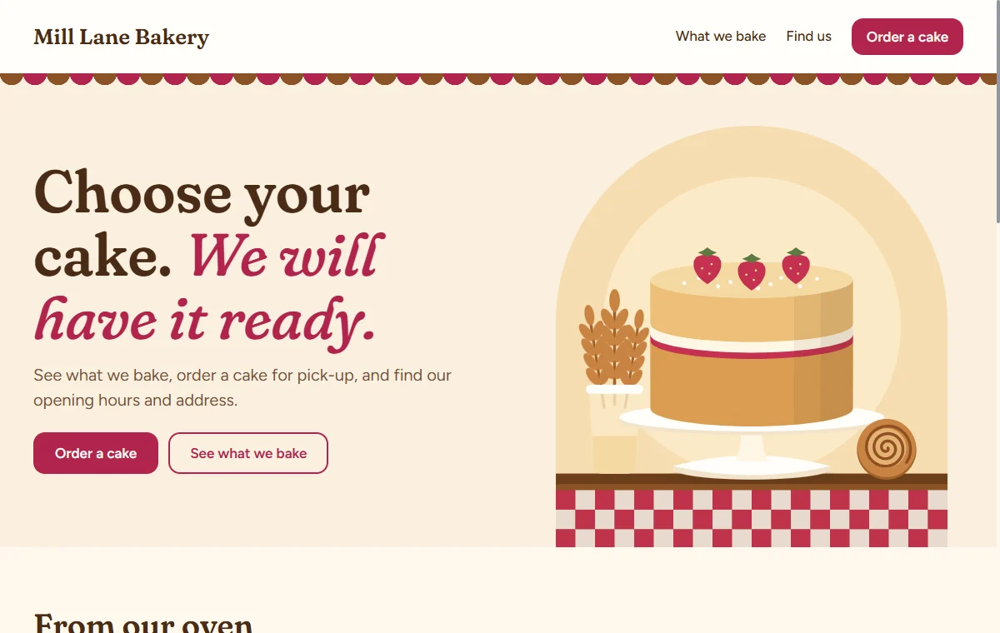

Make a small website
Follow one small website from a single sentence to a working prototype, with Claude Code doing the writing and you making the decisions. Then see the same thing at full size.

What you'll do
You don't need to know anything about specifications or programming. The manual explains the ideas. This tutorial is the doing.
Everything here is real. The questions, the counts and the pictures come from an actual session that made this bakery. You can open the result yourself: it's in the skill's folder, in examples/bakery/specs.